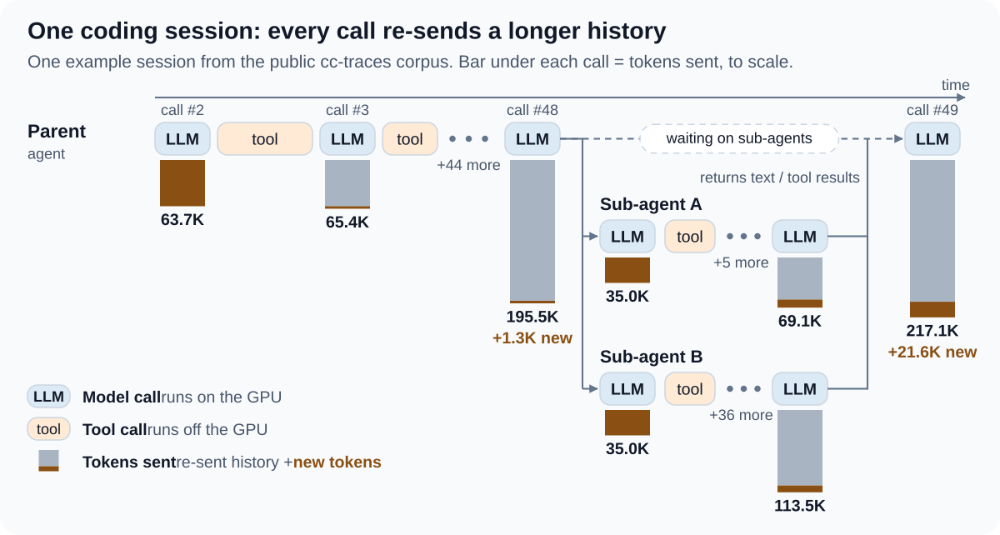
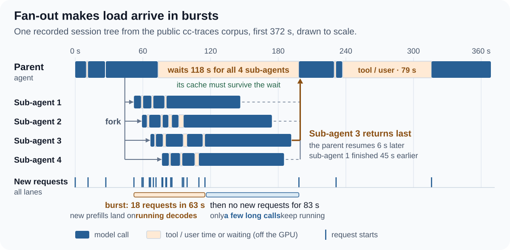
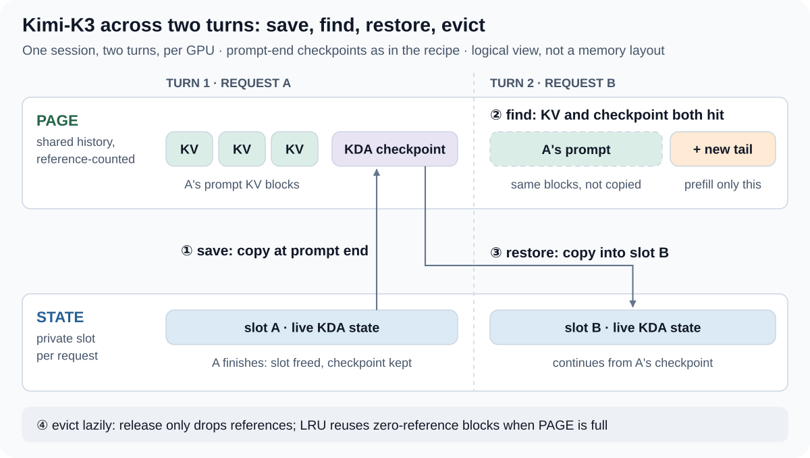
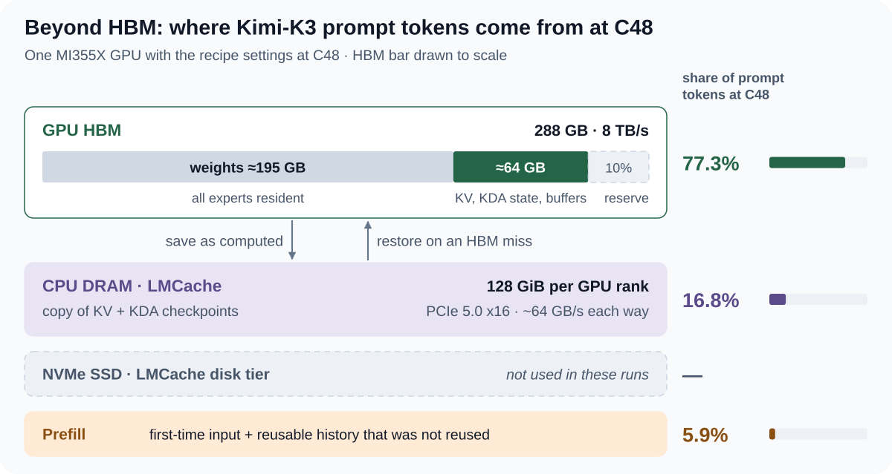
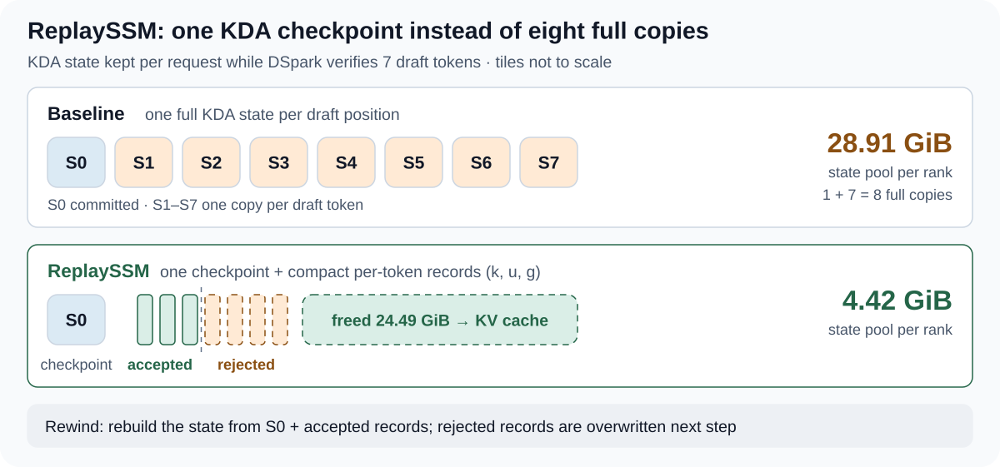
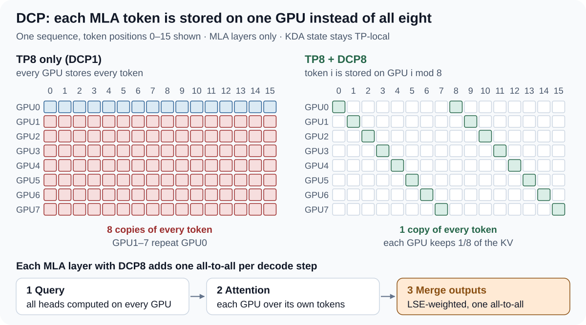
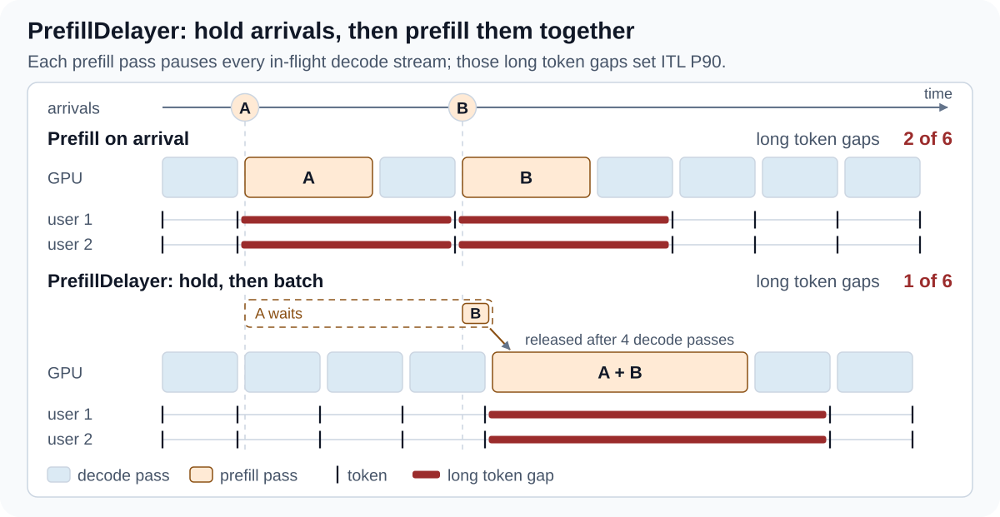
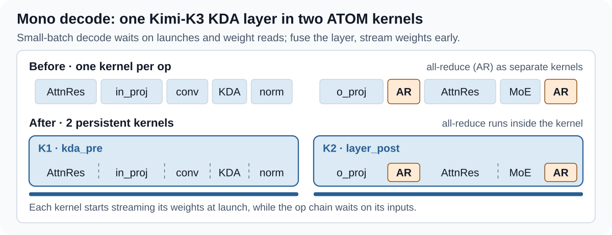
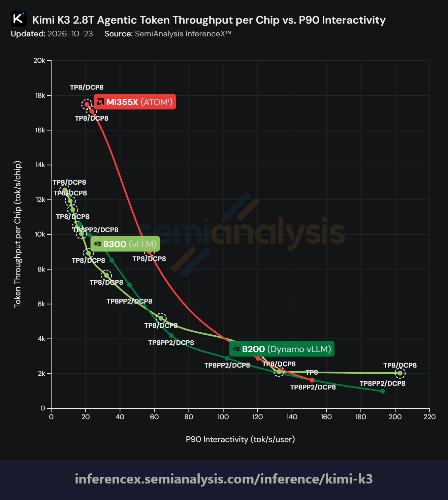

让智能体保持“热态”：ATOM 如何在 AMD Instinct MI355X GPU 上服务 AgentX 工作负载
一个编程智能体会在单次会话中多次调用模型，而且每次调用都会重新发送此前几乎所有内容：某个记录下来的会话共发起 198 次调用，其中第 48 次调用发送了 19.55 万个 token，只有 1,300 个是新增内容。智能体工作负载把很长的共享历史与很短的输出结合在一起，期间还会穿插工具调用和并行子智能体。要高效服务这类负载，仅靠 GPU 原始算力还不够；还必须让智能体保持“热态”（warm），即让历史持续留在缓存中，并在新请求到达时维持解码推进。
简要结论。 在 8 张 AMD Instinct™ MI355X GPU 上，ATOM 服务 Kimi-K3 时，在 56 个并发会话下可达到每芯片 17.5K 总 token/s（输入与输出 token 合计，包含缓存命中的输入）；在 SemiAnalysis InferenceX AgentX 基准的单会话测试中，P90 交互性达到每用户 152 token/s（测试运行于 2026-10-15，图表截至 2026-10-23；见图 9）。
本文以 Kimi-K3 为案例。它是一种混合模型，同时包含多头潜在注意力（multi-head latent attention，MLA）层和 Kimi Delta Attention（KDA）层。模型运行在 ATOM 上；ATOM 是 AMD 面向 ROCm 原生构建的推理引擎。本文使用 AgentX 基准进行测量。
本文分为三部分：
- AgentX 工作负载及其挑战。 两段记录下来的会话展示了长共享历史、突发式子智能体扇出和空闲间隔。这些特征共同带来三项服务挑战：保持历史可复用、在新请求与持续解码之间取得平衡，以及在 batch 很小时降低每一步的成本。
- ATOM 在内存、调度和计算三个层面的优化。 内存方面：在 GPU HBM 与 CPU DRAM（LMCache）之间复用历史，使用 ReplaySSM 压缩推测状态，并使用 DCP 在 GPU 之间分片 MLA KV。调度方面：利用 PrefillDelayer 暂存并合并短 prefill，让活跃智能体持续生成。计算方面：把每个解码步骤融合为持久化内核（Mono decode，以 FlyDSL 编写）。
- 结果与总结。 展示 InferenceX 结果、针对不同并发度的部署设置，并将每项挑战与相应技术及测量效果对应起来。
AgentX 工作负载：真实编程会话与分支请求
AgentX。 SemiAnalysis 在 InferenceX 中提供 AgentX，用于评估智能体工作负载模式下的服务性能。[1]
轨迹数据集。 AgentX 会重放公开的 Claude Code 会话语料库 cc-traces-weka-062126，其中包含 393 个会话和 98,827 个模型请求。[2] 输入长度中位数为 142,016 token，输出长度中位数为 444 token，体现出长历史、短续写的特点。[3] 重放会保留每个请求的大小、共享前缀、依赖关系和时序，但会发送合成 token，而不是原始代码和工具输出。[2][4] token 数量来自轨迹中的 64-token block，并非由 Kimi-K3 tokenizer 计算。[2]
工作负载特征。 按照 InferenceX 工作负载概述和 AgentX 方法说明，[1][4] 其中反复出现三种模式。图 1 和图 2 通过两个记录下来的会话展示这些模式：图 1 从 token 角度展示，图 2 从时间角度展示。我们选择这两个会话，是因为它们能清楚呈现每种模式；它们只是示例，并非整个语料库的平均值，语料库整体统计数据也会同时列出。
- 不断增长且可复用的历史。 每次调用都会重新发送截至当时的全部对话。图 1 中，第 48 次调用发送了 19.55 万个 token，其中只有 1,300 个是新增的。如果服务器仍保存其余内容对应的状态，前缀缓存复用就能让 prefill（生成前处理输入的计算）只处理这些新增 token。[1][4]
- 子智能体扇出与依赖。 父智能体会派生子智能体，并等待它们返回结果。子智能体可能继承一段前缀，也可能从无前缀状态开始：图 1 显示，第 48 次调用之后派生出的三个子智能体中有两个都以一次 3.50 万 token 的调用开场，而且没有重新发送父智能体的历史。三个子智能体的首次调用彼此几乎相同，因此只有第一个是完全冷启动。图 2 中，四个子智能体在 63 秒内发送 18 个请求；父智能体为等待最后一个子智能体而停顿 118 秒，并在 6 秒后恢复。这些时间记录自对原模型 API 的调用，而不是 ATOM 重放。整个语料库包含 1,697 个分组中的 42,029 个子智能体请求。[2] 基准中的并发度统计的是活跃会话树，而不是请求数量，因此一个会话可以同时保持多个在途请求。[1]
- 空闲间隔。 工具运行时间和用户思考时间会在调用之间产生间隔，例如图 2 中父智能体的 79 秒空档。AgentX 会在自身空闲间隔限制范围内重放这些记录下来的间隔，但不会重放间隔期间发生的具体活动。[1][4]

图 1：一个编程会话的 token 视图；每次调用都会重新发送完整历史，而新增输入很少。[2]

图 2：一个会话树的时间视图；子智能体突发到达，而父智能体的缓存必须在等待期间保持有效。[2]
挑战：内存、调度与计算
内存：保持可复用历史随时可用
长上下文为何会给缓存带来压力。 长对话和相互重叠的分支会争夺缓存空间；这些空间是在模型权重、运行时 buffer 和活跃请求占用之后剩下的。如果有用的历史被逐出，而且无法从其他层级恢复，就必须重新处理。固定长度、请求彼此独立的测试无法暴露这种跨请求的保留压力。（InferenceX 工作负载概述）
命中率小幅下降，就可能多出数千个 prefill token。 本文中的有效前缀缓存命中率，是指无需重新执行 prefill 即可复用的输入 token 比例，其中包括从其他层级恢复的历史。对于长度为 N 的输入，如果有效复用率从 96% 降至 95%（下降一个百分点），需要 prefill 的输入 token 会增加约 N × 1%：
- 以整个语料库 142,016 token 的输入长度中位数计算，约会增加 1,420 个 token。
- 以 682,880 token 的 P95 输入长度计算，同样的下降会增加约 6,829 个 token。P95 是约最长 5% 请求的门槛，并不是这些请求的平均值。[3]
这些只是基于语料库 64-token 输入长度代理值的敏感性计算，并非实测缓存未命中。prefill token 变多，也不代表 FLOPs 或首 token 时间（time to first token，TTFT）会按相同比例变化。
对单个请求而言，成本落点很直观：完全命中时会恢复缓存前缀，只 prefill 未缓存的后缀；部分命中时会从更早的缓存边界恢复，并 prefill 其余部分；未命中时则必须在生成首个 token 前 prefill 整个输入。本文关注的两个用户侧指标也由此产生：TTFT，以及交互性，即每位用户每秒收到的输出 token 数（见 InferenceX 术语表）。
调度：平衡新到达请求与解码推进
工具结果、新分支和缓存未命中都会带来新的 prefill，并与正在进行的解码争用资源。每个请求一到达就立即接纳，会不断打断活跃智能体；暂时保留请求则会形成队列并提高 TTFT。调度器必须随着负载变化在两者之间取得平衡。延迟还会沿会话树累积：像图 2 那样等待子智能体的父智能体，只有在最后一个子智能体返回后才能继续，因此返回最晚的分支出现延迟，会拖慢整个任务。
计算：降低每一步的开销
热前缀可以避免重复计算，但无法消除对历史的注意力计算，也不能免去每一步的执行成本：
- 逐 token 工作。 每个新生成的 token 仍要经过整个模型；解码 batch 较小时，内核启动开销和重复的内存流量会更加突出。
- 推测成本。 推测解码会增加草稿生成和验证工作。
ATOM 优化：内存、调度与计算
ATOM 负责协调状态与调度策略，并实现融合解码内核；LMCache 则提供 CPU DRAM 层级。针对不同并发度的配置见部署建议。
内存：共享、扩展、压缩并分片缓存状态
使用缓存层级减少重复 prefill（对应内存挑战）。 GPU HBM 让历史靠近执行单元。LMCache 把保留范围扩展到 CPU DRAM，以复用前的数据传输成本换取更大容量。SSD 可提供另一个层级，但 I/O 成本更高；本文配置没有使用 SSD。（InferenceX 工作负载概述、ATOM #2053）
Kimi-K3 交错使用两类层：MLA 层维护随历史增长的 KV 缓存，KDA 层维护固定大小的卷积状态和循环状态。下述机制使用 ATOM 面向 Kimi-K3 的原生分页缓存路径（PAGE：KV block 与保留的 KDA checkpoint 共享的分页容量），对应一个固定的源码修订版本。
在 HBM 中共享 KV 与 KDA checkpoint
Kimi-K3 要求联合缓存命中。 只有 MLA KV 和 KDA checkpoint 在同一边界上同时存在，请求才能从该缓存边界恢复。如果只有 KV 匹配，ATOM 会退回到两者都存在的最近一个更早边界，或者从头开始 prefill。（ATOM #2045）
- 共享 KV block。 每个完整 KV block 都根据截至其末尾的全部历史计算哈希，因此具有相同历史的请求会指向同一组 block，而不是复制它们。（ATOM #1771）
- 把 KDA 状态复制到 checkpoint。 请求的实时 KDA 状态会持续变化，因此 ATOM 会在选定边界把它复制为 checkpoint，并放入与 KV block 相同的池中。后续命中时，会把该 checkpoint 复制到新请求自己的状态槽位，然后从那里继续。（ATOM #1771、ATOM #2045）
- 保留已结束请求的历史，直到空间确实需要回收。 请求结束后，其缓存 block 仍保持可复用，直至池需要释放空间。（ATOM #1771）

图 3：Kimi-K3 在两个轮次之间复用前缀；KV block 与 KDA checkpoint 会一起保存、查找和恢复。
在 checkpoint 密度与保留历史之间取得平衡。 保留更多历史 KDA checkpoint，可以提供更多可能的恢复边界；但每份副本都会占用容量和复制带宽，而这些资源原本可以用于保留 KV。稀疏放置能节省存储，但即使存在很长的 KV 匹配，也可能因为缺少相应状态而无法完整利用。
选择有价值的 checkpoint 边界。 ATOM 支持三类选择方式：使用按 token 间隔设置的 interval ladder；在此前因缺少状态而放弃复用的位置创建 demand checkpoint；以及在最后一个可匹配 block 边界附近创建 prompt-end anchor。anchor 面向后续继续扩展较早 prompt 的请求，不一定与该 prompt 的最后一个 token 重合。这些是边界选择规则，并不是百分比采样。在 Kimi-K3 的 PAGE 路径上，保存的状态必须精确对应所选边界，因此 prefill chunk 可能需要在该处结束后再复制。实际部署配方只使用 prompt-end anchor（图 3）；interval checkpoint 和 demand checkpoint 仍可用于其他工作负载。（ATOM #2045）
使用 LMCache 将复用扩展到 CPU DRAM
高并发下，仅靠 HBM 并不够。 每张 AMD Instinct MI355X GPU 配备 288 GB HBM3E。[5] 所有专家都会常驻内存（MoE 稀疏性减少的是计算量，并不减少内存占用），因此每张 GPU 上的权重约占 195 GB。该数字由 1.56 TB checkpoint 平均分到 8 张 GPU 估算而来，并非实测。预留 10% 后，只剩约 64 GB 可供运行时 buffer、KV 和 KDA 状态使用。在 C48 下，配方通过 LMCache 为每个 GPU rank 额外提供 128 GiB CPU DRAM。
C48 的 prompt token 来自哪里。 在 2026-10-15 的运行中，77.3% 的 prompt token 从 HBM 复用，16.8% 从 DRAM 恢复，总计达到 94.1%（图 4）。[10] 该轨迹允许的复用上限为 97.2%，即无限缓存能够达到的命中率。剩余 5.9% 的 prefill token 中，2.8% 是首次出现的输入，约 3.1% 是本可复用但未能复用的历史。这只是一次运行内部的构成，并不是启用与关闭 LMCache 的对比。

图 4：C48 下 prompt token 的来源：GPU HBM、经 LMCache 使用的 CPU DRAM，或者 prefill。[10]
从 DRAM 恢复时仍遵循同一联合命中规则。 KV chunk 和 KDA checkpoint 共用同一个 LMCache CPU 存储管理器，但会返回不同位置：KV 返回 PAGE block，KDA 状态返回请求私有槽位。只有两项加载都完成后，ATOM 才会从共享边界恢复；如果任一加载失败，ATOM 就不会复用该边界，而会重新计算。（ATOM #2053、ATOM #2045）
使用 ReplaySSM 压缩 DSpark 的推测 KDA 状态
它是什么，又用在哪里。 ReplaySSM（ReplaySSM: Cache SSM Inputs, Not State；SSM 指状态空间模型，state space model）改变了解码期间循环状态的存储方式。这里，ATOM 使用它减少 DSpark 的 KDA 回滚存储；它并不是在重放执行图。（ReplaySSM、ATOM #1883）
推测为何会带来状态问题。 DSpark 会提出草稿 token，交由目标模型验证。如果只有其中一个前缀被接受，KDA 就必须从该边界继续，同时排除被拒绝的 token。基线方案会为每个推测位置保留完整的循环状态快照，因此验证窗口越长，需要的大型状态副本越多。
只保留一个 checkpoint 和紧凑的更新记录。 ReplaySSM 保留一个循环 checkpoint 和一个短 (k, u, g) buffer，其中分别保存 key、经过 delta 修正的更新和衰减信息。checkpoint 加上已提交记录，可以把所需状态重建为衰减后的 checkpoint 与加权外积更新之和。保存经过修正的 u 而不是原始 v，可以合并这些更新，而不必让每次修正都重新经过此前状态。
提交被接受的前缀，并定期将其折叠。 在下一次 forward 中，ATOM 使用上一步接受的数量推进 cursor。被拒绝的记录仍位于已提交前缀之外，之后会被覆盖。定期 fold 会把已提交记录吸收到 checkpoint 中并复用 buffer，以记录存储及重放/fold 计算换取快照存储空间。它管理的是活跃解码窗口，与为后续请求保留的前缀 checkpoint 不同。（ATOM #1883）

图 5：ReplaySSM 保留一个 KDA checkpoint 和逐 token 记录，而不是为每个草稿位置保存完整状态，从而为 KV 缓存释放空间。
在 MI355X 上使用 Kimi-K3 的本地实验中，DSpark 使用 7 个草稿 token（配方在 C8 及以上使用 4 个）和 8 路张量并行（TP8）。ReplaySSM 每个 rank 可释放 24.49 GiB，可用 KV block 数量从 8,325 提高到 18,813（2.26×），从而保留更多历史；这并不表示吞吐量或缓存命中率提升了 2.26×。
使用 DCP 在 GPU 之间分片 MLA KV
解码上下文并行（decode context parallelism，DCP）会在现有 TP rank 之间分片 MLA KV；KDA 状态仍保留在各 TP rank 本地。[7]（ATOM #847、ATOM #1701）
图 6 展示了这种布局。MLA 为每个 token 保留一个供所有 attention head 读取的潜在 KV 条目，因此拆分 head 并不会拆分 KV：仅使用 TP8 时，每张 GPU 都会保存全部 KV。DCP8 则把 token 以轮转方式分配到 8 张 GPU 上（token i 放在 GPU i mod 8，这是 ATOM 的默认方式），因此每个 token 只存储一次。假设 48 个会话都采用语料库 142K token 的中位长度（这只是估算，并非实测 C48 工作集），MLA KV 在每张 GPU 上的占用约为：24 层 × 每 token 576 B（FP8）× 48 × 142K ≈ 94 GB，超过去除权重和预留空间后约 64 GB 的余量；DCP8 可把它降到约 12 GB。代价是每个解码步骤的每个 MLA 层都要额外执行一次 all-to-all，以合并局部注意力输出。由于 ATOM 默认会复制 query，每张 GPU 会自行计算全部 query head，因此不需要 gather query。对缓存前缀执行 prefill 时也需要 gather KV。

图 6：MLA KV 布局；仅使用 TP8 时，每张 GPU 都存储每个 token；使用 DCP8 后，每个 token 只存储在一张 GPU 上。
调度：使用 PrefillDelayer 合并 prefill
合并策略（对应调度挑战）。 每次 prefill 后，PrefillDelayer 会让设定数量的解码 pass 运行，同时暂存新到达请求，让它们之后一起进行 prefill，而不是逐个暂停解码。这里计数的是解码 pass，而不是生成的 token。ATOM 已将这一机制扩展到 TP/DCP。暂存有上限，但并不构成端到端 TTFT 保证。（ATOM #2238）

图 7：PrefillDelayer 暂存新到达请求并把它们一起 prefill，使解码流只暂停一次，而不是暂停两次。
图 7 是示意图。在 ATOM #2238 中，Kimi-K3 AgentX 在 C16 下启用 4-pass 延迟后，P90 token 间延迟（inter-token latency，ITL）从 31.6 ms 降到 24.6 ms，下降 22%，因此活跃智能体能更稳定地获得 token。代价由新到达请求承担：TTFT 中位数从 1,182 ms 上升到 1,766 ms，增加 49%。因此，配方从 C16 起才启用该延迟，而不会在强调交互性的并发区间启用。（ATOM #2238）
计算：使用 Mono decode 融合每个解码步骤
面向单会话延迟的 Mono decode（对应计算挑战）。 在 C1 下，一个推测步骤会让目标模型验证单个请求的 7 个草稿 token，再加上 1 个 token，因此只需处理 8 行。在这个规模上，主导成本的是内核启动和权重流式读取，而不是算术计算。Mono decode 会把每个适用 KDA 层中的一连串小内核，替换为两个用 FlyDSL 编写、随 ATOM 发布的持久化内核：K1 从注意力输入一直执行到 KDA 循环；K2 覆盖输出投影和潜在 MoE，并包含张量并行 all-reduce。两个内核都会在启动时开始流式读取权重。MLA 层和少数其他层仍使用标准路径。关于这些 FlyDSL 单体内核的设计，以及它们在 ATOM、vLLM 和 SGLang 中的使用方式，请参阅《用于 ATOM 高交互式 LLM 服务的 FlyDSL 单体内核》。[11]
测量效果。 ATOM #2535 的单请求测试使用 7 个草稿 token、固定接受长度和 TP8。与将三个 KDA 投影保持为 BF16 的参考实现相比，目标模型 forward 时间从 22.0 ms 降到 16.4 ms。（ATOM #2535）

图 8：Mono decode 把每个适用的 KDA 层作为两个持久化内核运行，并在内核内部执行 all-reduce。
适用范围。 第一版 Kimi-K3 单体内核可服务不超过 8 行的解码步骤，正好容纳一个带 7 个草稿 token 的请求。ATOM #2659 把上限提高到 16 行，并融合 MLA 层的输出投影和 MoE；ATOM #2871 又把上限提高到 64 行。包含 prefill 的步骤仍采用标准路径。配方只在 C1 启用 Mono decode，因为其他并发区间尚未使用它完成测量。
结果与部署建议
性能与 AgentX 部署
图 9 展示了 InferenceX 报告的 Kimi-K3 在不同硬件/框架组合下的吞吐量与交互性权衡。粗略而言，一个数据点向上移动（每芯片处理更多 token）主要依赖内存能力，因为复用历史会跳过 prefill；向右移动（每位用户获得更快响应）则更多依赖调度与逐步计算。这种跨系统对比并不是对单项优化的消融实验。

图 9：不同系统上 Kimi-K3 的每芯片总 token 吞吐量与 P90 交互性。来源：SemiAnalysis InferenceX，更新于 2026-10-23。
Kimi-K3 AgentX 配方为 8× AMD Instinct MI355X GPU 上的 ATOM 提供了针对不同并发度的起点，下表进行了汇总。所有区间都使用 FP8 KV 和 GPU 前缀缓存，Mono decode 只在 C1 开启。图 9 中 MI355X/ATOM 数据点来自 InferenceX 运行配置，使用 2026-10-13 的 ATOM nightly build，并在所有绘制的并发度（包括 C1）上关闭 FlyDSL 单体内核。该运行中 KDA 状态保持为 FP16；Mono decode 则将其保持为 FP32。部分环境与量化设置也不同于后来的配方。因此，图中的 **C1 每用户 152 token/s（P90）**和 C56 每芯片 17.5K token/s尚未包含 Mono decode。
在同一 build 上执行 Kimi-K3 AgentX C1 测试时，启用 Mono decode 可把 ITL 中位数从 6.27 ms 降到 5.01 ms，并将输出吞吐量提高 10.9%。同一套 FlyDSL 单体方法也已在 ATOM 中用于 GLM-5.2、DeepSeek-V4.1 和 MiniMax-M3。[11]
| 服务区间 | 优化重点 | 配方：并行与推测 | 配方：缓存与调度 |
|---|---|---|---|
| 交互区间，C1/C2/C4 | 最低的单用户延迟 | TP8、DCP1；DSpark 使用 7 个草稿 token；合成接受长度（AL）为 3.84 | GPU 前缀缓存；不使用 LMCache；关闭 ReplaySSM；只在 C1 启用 Mono decode |
| 中等并发，C8/C12/C14/C16 | 在突发 prefill 下保持稳定解码 | TP8、DCP8；DSpark 使用 4 个草稿 token；合成 AL 为 3.36 | LMCache 128 GiB；启用 ReplaySSM；在 C16 启用 PrefillDelayer |
| 吞吐区间，C32–C80 | 在单位内存中保留最多历史和会话 | TP8、DCP8；DSpark 使用 4 个草稿 token；合成 AL 为 3.36 | 启用 ReplaySSM；C32–C48 使用 LMCache 128 GiB，C56–C80 使用 192 GiB；启用 PrefillDelayer；使用更大的在途窗口 |
Checkpoint 策略。 配方只保留 prompt-end anchor：--state-checkpoint-interval-tokens -1 会关闭 interval ladder（默认间隔 8192 token），ATOM_STATE_CHECKPOINT_DEMAND=0 会关闭 demand checkpoint。（ATOM #2045）
部署检查
每个并发度都应启动一个全新的服务器，并保存对应数据点的模型、硬件、软件版本与服务配置。合成接受率只用于性能测试；在正确性和任务质量评估中应关闭。针对目标工作负载，需要检查重新执行的 prefill、恢复失败和内核分派，然后测试长上下文续写、checkpoint 分支和工具使用。以上区间是配方选择，并非通用阈值；应通过这些检查，选择满足自身延迟和质量要求的运行点。
总结
本文介绍了 ATOM 如何在 8 张 AMD Instinct MI355X GPU 上，以 Kimi-K3 为案例服务 SemiAnalysis InferenceX AgentX 基准中的智能体编程工作负载。重放的编程会话不同于固定长度请求测试：每次调用都会重新发送很长且不断增长的历史（图 1），子智能体会突发到达，调用之间还存在空闲间隔（图 2）。这些模式带来三项服务挑战：保持历史可复用、在新 prefill 与持续解码之间取得平衡，以及在 batch 很小时降低每一步的成本。
随后，本文展示了 ATOM 如何逐项应对这些挑战。内存方面，ATOM 在 GPU HBM 中共享 MLA KV block 与 KDA checkpoint，并通过 LMCache 将复用扩展到 CPU DRAM，使 C48 下 94.1% 的 prompt token 得以复用，而无需 prefill。ReplaySSM 压缩推测 KDA 状态，在使用 7 个草稿 token 的实验中可容纳 2.26× 的 KV block；DCP8 则让每个 MLA KV token 只存储在一张 GPU 上，而不是同时存储在 8 张 GPU 上。调度方面，PrefillDelayer 暂存并合并新到达请求，在 C16 将 P90 ITL 降低 22%，代价是 TTFT 中位数增加 49%。计算方面，Mono decode 把每个适用的 KDA 层融合为两个持久化 FlyDSL 内核，在单请求测试中把目标模型 forward 时间从 22.0 ms 降到 16.4 ms，并在 C1 AgentX 运行中把 ITL 中位数从 6.27 ms 降到 5.01 ms。
在 InferenceX 上，2026-10-15 的测试测得 ATOM 在 MI355X 上 C56 每芯片 17.5K 总 token/s，以及 C1 每用户 152 token/s（P90），且 FlyDSL 单体内核处于关闭状态。这些数字代表完整被测软件栈的运行点，并不是归因于某一项技术的增益。若要尝试这些设置，可从 Kimi-K3 AgentX 配方开始，并使用部署检查针对自己的流量进行验证。
未来，我们计划测量 C1 以外并发度下的 Mono decode，因为 ATOM #2871 现已支持最多 64 行的解码步骤；同时也会把它加入 InferenceX 运行。我们还在努力缩小与轨迹 97.2% 复用上限之间的剩余差距，并评估把 SSD 作为额外缓存层级，用于更长会话和更高并发。后续结果发布时，请关注 ROCm Blogs。
致谢
感谢 ATOM、AITER 和 FlyDSL 团队，以及 LMCache 社区所作的贡献。
参考资料
- SemiAnalysis AgentX harness：AgentX MVP 教程
- cc-traces-weka-062126 数据集卡片（Hugging Face）
- InferenceX 对 Claude Code 轨迹语料库的数据集统计
- SemiAnalysis AgentX harness：轨迹重放教程
- AMD Instinct MI355X GPU 产品页面
- ATOM Kimi-K3 AgentX 配方（固定修订版本）
- ATOM MLA 注意力实现（固定修订版本）
- InferenceX Kimi-K3 ATOM MI355X AgentX 运行配置（固定修订版本）
- Kimi-K3 模型文件（Hugging Face）
- 2026-10-23 的 Kimi-K3 InferenceX 基准结果（API）
- 用于 ATOM 高交互式 LLM 服务的 FlyDSL 单体内核
免责声明
本文所述信息仅供参考，可能包含技术错误、遗漏和排版错误。本文所含信息可能发生变化，并可能因多种原因而变得不准确，包括但不限于产品和路线图变更、组件和主板版本变更、新型号和/或新产品发布、不同制造商之间的产品差异、软件变更、BIOS 刷写、固件升级或类似情况。任何计算机系统都存在无法完全预防或缓解的安全漏洞风险。AMD 不承担更新、更正或修订这些信息的义务。但 AMD 保留随时修订本文信息和更改本文内容的权利，且无须就此类修订或更改通知任何人。本信息按“原样”提供。AMD 不对本文内容作出任何陈述或保证，也不对其中可能出现的任何不准确、错误或遗漏承担责任。AMD 明确否认任何有关不侵权、适销性或特定用途适用性的默示保证。即使 AMD 已被明确告知可能发生此类损害，在任何情况下，AMD 均不对任何人因使用本文所含任何信息而产生的任何依赖性损害、直接损害、间接损害、特殊损害或其他后果性损害承担责任。
第三方内容由拥有该内容的第三方直接向您授权，而非由 AMD 向您授权。所有链接的第三方内容均按“原样”提供，不附带任何形式的保证。是否使用此类第三方内容完全由您自行决定；任何情况下，AMD 均不对任何第三方内容向您承担责任。您承担使用此类内容的一切风险，并对使用第三方内容可能产生的任何损害负全部责任。
AMD、AMD 箭头标志、AMD Instinct、ROCm 及其组合是 Advanced Micro Devices, Inc. 的商标。本文使用的其他产品名称仅用于识别目的，可能是其各自公司的商标。© 2026 Advanced Micro Devices, Inc. 保留所有权利。